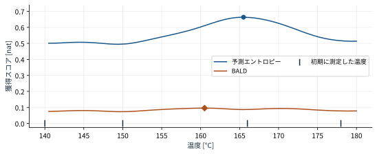
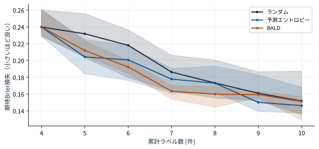

第8章 能動学習の基礎
学習目標 目的に合った観測の選び方を定め、予測エントロピーとBALDを計算する。ラベル予算を揃えて学習曲線を比較し、選択法が失敗したときに調べる条件を説明する。
8.1 どの温度の合否を調べるか
第6章では、強度を高くできる温度を探しました。ここでは、140〜180 °Cの範囲で製造する試験片について、次の試験片が74 MPa以上になる確率を予測します。破壊試験に時間がかかり、現場から返るデータは「合格」か「不合格」だけだとします。両方の問題は候補を選び、測定し、モデルを更新するという手順を共有します。候補の価値を測るには、最終的に知りたい量を先に定めます (Settles 2009年; Frazier 2018年)。
能動学習（active learning, AL）は、どのデータのラベルを取得するかを学習側から選ぶ枠組みです。ラベルを返す人・測定装置・シミュレーターをオラクルと呼びます。ここでは温度の一覧を先に用意し、試せる候補の中から選ぶプールベースを使います。入力自体を連続範囲などで設計して問い合わせる方式はクエリ合成です。製造条件を連続に設定できる場合にも、装置の分解能、運用範囲、候補の実現可能性を選択に反映します (Settles 2009年)。
| 設定 | 何を返してもらうか | 選択後に達成したいこと |
|---|---|---|
| 強度を最大化するBO | 実数の強度 [MPa] | 高い強度を生む条件を推薦する |
| 回帰のAL | 実数の強度 [MPa] | 対象温度の強度予測を改善する |
| 分類のAL | 合否 \(y\in\{0,1\}\) | 対象温度の合格確率や判定を改善する |
合成試験では、第1章からの潜在強度を \(g(x)\) [MPa]、正規化温度を \(x=(T-140)/40\) とします。物理温度 \(T\) の単位は °C です。独立な測定のばらつき \(\epsilon\sim\mathcal N(0,2^2)\) [MPa] を加え、\(g(x)+\epsilon\ge74\) MPa なら \(Y=1\) とします。正規分布の対称性から、真の合格確率は \(r(x)=\Phi((g(x)-74)/2)\) です。\(\Phi\) は標準正規の累積分布関数です。Notebookは各候補の独立な一様乱数 \(u\) を保持し、問い合わせがあると \(u<r(x)\) の結果を返します。この方法は同じBernoulli分布に従います。シミュレーターが内部で使う \(r(x)\) は学習器の入力に含めません。
8.2 実行する 77件の未測定候補から1件を選ぶ
第8章のNotebook と同じフォルダで実行します。合否の確率モデルには次章で導くGP分類器を使います。まず初期4件で学習し、2種類の獲得関数で未測定候補を評価します。最初は「温度を入れると合格の予測確率が得られる」と捉え、候補の順位を比べましょう。確率の計算と潜在スコアの関係は第9章で扱います。
import torch
from robotorchan.acquisition import BALD, PredictiveEntropy
from classification_experiment import fit_classifier, reveal_labels, uniforms
from experiment import DTYPE, SEED, setup
setup()
torch.set_default_dtype(DTYPE)
pool = torch.linspace(0, 1, 81, dtype=DTYPE).unsqueeze(-1)
initial = torch.tensor([0, 20, 52, 76])
remaining = torch.where(~torch.isin(torch.arange(len(pool)), initial))[0]
draws = uniforms(pool, SEED)
model = fit_classifier(
pool[initial], reveal_labels(pool[initial], draws[initial]), seed=SEED
)
with torch.no_grad():
candidates = pool[remaining].unsqueeze(-2)
entropy = PredictiveEntropy(model)(candidates)
information = BALD(model)(candidates)
next_index = remaining[information.argmax()]
new_x = pool[next_index].reshape(1, 1)
new_label = reveal_labels(new_x, draws[next_index].reshape(1, 1))
train_x = torch.cat((pool[initial], new_x))
train_y = torch.cat((model.raw_train_Y, new_label))81件のうち未測定は77件です。テンソル \((77,1,1)\) の各軸は、独立に比較する選択肢数、1回に選ぶ候補数 \(q=1\)、入力の次元数 \(d=1\) です。argmax が返す位置は77件の配列内のものです。remaining で元の候補番号に戻してラベルを取り、訓練データへ追加します。
初期温度は 140、150、166、178 °C、順に 1、1、0、1 が返りました。予測エントロピーは 165.5 °C、BALDは 160.5 °C を選びました。この回ではBALDの候補だけを測り、ラベル 1 を得ました。

8.3 予測エントロピーでラベルの曖昧さを測る
現在の観測集合を \(\mathcal D\)、候補 \(x\) で今後得るラベルを \(Y_x\) とします。合格の予測確率を \(\bar p_x=\Pr(Y_x=1\mid x,\mathcal D)\) と書きます。ラベルのエントロピーは、起きた事象の驚き \(-\log\Pr(Y_x=y\mid x,\mathcal D)\) の期待値です。二値の場合、次の関数 \(h\) で表せます。
\[ H(Y_x\mid x,\mathcal D) =h(\bar p_x),\qquad h(p)=-p\log p-(1-p)\log(1-p). \tag{8.1}\]
自然対数を使うので、単位はnatです。端点の \(0\log 0\) は連続極限の0とします。\(0<p<1\) で \(h'(p)=\log((1-p)/p)\)、\(h''(p)=-1/[p(1-p)]<0\) なので、\(p=0.5\) で最大の \(\log 2\) になります。不確実性サンプリングは、予測の曖昧な候補を優先する方策です。二値で \(|\bar p_x-0.5|\) が小さい順に選ぶと、エントロピーが大きい順と一致します。多クラスでは上位2クラスの確率差とエントロピーの順位は一般に異なります (Settles 2009年)。
8.4 BALDで潜在スコアについての情報を測る
モデルには候補 \(x\) の潜在スコア \(F_x\) の事後分布があります。\(P_x=\Pr(Y_x=1\mid F_x,x)\) は、\(F_x\) の値とともに変わる確率です。この分布の平均が \(\bar p_x=\mathbb E[P_x\mid x,\mathcal D]\) です。モデルは \(x,F_x\) が与えられると、次のラベルの分布が定まると仮定します。
BALD（Bayesian Active Learning by Disagreement）は、ラベル \(Y_x\) と潜在スコア \(F_x\) の条件付き相互情報量です。事後分布を \(p(f\mid x,\mathcal D)\) と略し、ラベルの条件付き確率を \(p(y\mid f,x)\) と書きます。ラベルを知る前後で \(F_x\) の分布がどれだけ変わるかを測ります。Bayesの定理により、比 \(p(f\mid y,x,\mathcal D)/p(f\mid x,\mathcal D)\) は \(p(y\mid f,x)/p(y\mid x,\mathcal D)\) に等しくなります。その対数の期待値を2つに分けると次の式を得ます (Houlsby ほか 2011年)。
\[ \begin{aligned} I(Y_x;F_x\mid x,\mathcal D) &=\mathbb E_{F_x,Y_x\mid x,\mathcal D} \!\left[\log\frac{p(Y_x\mid F_x,x)}{p(Y_x\mid x,\mathcal D)}\right]\\ &=h(\bar p_x)-\mathbb E_{F_x\mid x,\mathcal D}[h(P_x)]. \end{aligned} \tag{8.2}\]
\(h\) は凹関数なので、Jensenの不等式から右辺は0以上です。予測エントロピーから、\(F_x\) が分かっても残るラベルの曖昧さの平均を引いています。Notebookの二点例では、同じ \(\bar p_x=0.5\) から次の違いが出ます。
| 候補 | \(P_x\) の分布 | 予測エントロピー [nat] | BALD [nat] |
|---|---|---|---|
| A | 常に0.5 | 0.693 | 0.000 |
| B | 0.1と0.9が等確率 | 0.693 | 0.368 |
Aでは次の試験片が合格か不合格かは予測しにくく、観測しても \(P_x\) の分布は変わりません。Bでは一つの合格ラベルを得れば、\(P_x=0.9\) の事後重みが0.5から0.9に増えます。実験で用いる二値Probit GPは連続な潜在分布を持ちます。ここでの二点分布は、二つの獲得基準の違いを手計算で確かめる例です。実装では学習済みの近似潜在事後を使い、条件付きエントロピーの積分を数値求積します。
8.5 回帰での不確実性と対象範囲
実数の強度を予測する場合、潜在分散が大きい温度を選ぶ方法があります。第4章のデータと有限候補を使ったNotebookでは、qPosteriorVariance を \(q=1\) で評価します。
潜在分散が最大の候補は 140.0 °C、事後平均が最大の候補は 152.0 °C でした。
回帰GPのカーネルとノイズ分散を固定します。現在の潜在事後分散を \(s^2(z)\)、候補 \(x\) と評価したい場所 \(z\) の事後共分散を \(c(z,x)\) とします。\(x\) に標準偏差 \(\sigma_n\) の独立なガウス測定誤差を持つ観測を1件加え、\(s^2(x)+\sigma_n^2>0\) とします。第4章の条件付き正規分布の式から、\(z\) の事後分散は
\[ s_{\mathrm{new}}^2(z)=s^2(z)-\frac{c(z,x)^2}{s^2(x)+\sigma_n^2} \]
になります。分散の減少は、候補の分散に加えて、候補と予測したい場所との共分散に依存します。分類でも、予測が必要な入力の分布を定めると、候補自身の情報量と利用先での情報量を区別できます。例えばEPIGは、候補のラベルと対象入力での将来ラベルの相互情報量を、その対象入力の分布で平均します (Bickford Smith ほか 2023年)。
8.6 同じ予算で学習効率を比較する
5通りのシードで、ランダム、予測エントロピー、BALDに共通の初期4件を与えます。1件選ぶたびに学習し直し、合計10件で停止します。同じシード・同じ候補温度では、どの方策でも同じ合否が返ります。ランダム方策は残った候補から一様に1件選びます。各方法は同じ誘導点配置、事前カーネルの初期値、60エポックのCPU学習を使います。選択に必要なスコア計算の量は方策ごとに異なります。
訓練や候補選択に使わない80点を、隣り合う候補の間に置きます。各点を等重みで評価し、対象分布を約140〜180 °Cで一様とします。予測確率 \(p\) と次のラベル \(Y\) の差の二乗 \((p-Y)^2\) を、ここでは二値のBrier損失と呼びます。両クラスの二乗誤差を合計する流儀では、この値の2倍になります (Brier 1950年)。合格の真の確率 \(r\) が分かるので、その温度での期待値は
\[ r(1-p)^2+(1-r)p^2=(p-r)^2+r(1-r) \]
です。右辺の第二項は、予測が真の確率と一致しても残ります。ここではラベルを評価用に再抽選する代わりに、その期待値の80点平均を測ります。実データで \(r\) が分からない場合は、独立に取得したラベルを使います。第9章でその例を実行します。

| 方策 | 初期4件の中央値 | 最終10件の中央値 |
|---|---|---|
| ランダム | 0.2399 | 0.1931 |
| 予測エントロピー | 0.2399 | 0.1463 |
| BALD | 0.2399 | 0.1468 |
中央値の線は、予算ごとに5本の値を集計したものです。選択法を比べるときは、予算の途中、最終予算、各シードでの差、実験費用を合わせて見ます。この実験は一つの合成材料、一つの対象温度分布、固定の初期位置が前提です。モデルが観測していない不良領域を高い確信で合格と予測するなら、曖昧さだけで選ぶとその領域を見落とす可能性があります。最初に温度域を広く測る、ランダム方策を基準に比較する、運用時の温度分布や希少不良を意識して評価用データを用意する、といった設計が効きます。
8.7 演習とまとめ
- 確認。 \(P_x\) が常に0.5の候補と、0.2または0.8を等確率に取る候補の予測エントロピーとBALDを求めてください。
- 操作。 学習・候補選択のコードを変えずに、評価対象を165 °C以上に絞って学習曲線を描いてください。同じ試行でも、対象分布を変えると評価が変わるのはなぜですか。
- 発展。 上の回帰の分散更新式で、\(c(z,x)=0\) の場合と、同じ \(s^2(x)\) を持つ二候補で \(|c(z,x)|\) が異なる場合を比べてください。対象温度の平均分散を減らす候補はどう選べますか。
能動学習では、どこを予測したいか、どの測定を選べるか、どの損失を下げたいかを決めます。予測エントロピーは次のラベルの曖昧さ、BALDはそのラベルで減らせる潜在スコアの不確実性を評価します。第9章では、これらの計算の出発点になる二値GP分類器を構成します。能動学習の設定と獲得基準はSettlesのサーベイ、BALDの導出はHoulsbyらを参照してください (Settles 2009年; Houlsby ほか 2011年)。